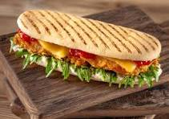

home
PANINI FROM PARIS

DESCRIPTION
A grilled Italian sandwich made with ciabatta or baguette, filled with meats, cheeses, and vegetables, toasted until crispy and warm.
INGREDIENTS
- 1 ciabatta or baguette (cut in half)
- 2 slices mozzarella or cheddar cheese
- 4 slices ham, turkey, or grilled vegetables (for veg option)
- 2 tbsp pesto or mayonnaise
- 2 tomato slices
- 1 handful spinach or arugula
- 1 tbsp butter (for grilling)
STEPS
- Slice the ciabatta or baguette in half.
- Spread pesto or mayonnaise on the inside of the bread.
- Layer with cheese, ham (or veggies), tomato slices, and spinach.
- Close the sandwich and lightly butter the outside.
- Grill in a panini press or on a stovetop pan until golden brown and crispy.
- Serve warm and enjoy.